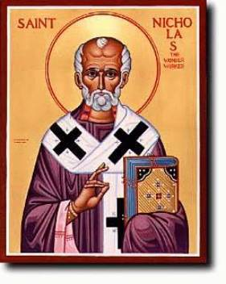

The Legend of the Three Generals – According to The
Golden Legend
“And in this time certain men rebelled against the
emperor; and the emperor sent against them three princes, Nepotian, Ursyn and
Apollyn. And they came into the port Andrien for the wind, which was contrary
to them; and the blessed Nicholas commanded them to dine with him, for he would
keep his people from the ravin that they made.
“And whilst they were at dinner, the consul, corrupt
by money, had commanded three innocent knights to be beheaded. And when the
blessed Nicholas knew this, he prayed these three princes that they would much
hastily go with him.
“And when they were come where they should be
beheaded, he found them on their knees, and blindfold, and the righter
brandished his sword over their heads. Then S. Nicholas, embraced with the love
of God, set him hardily against the righter, and took the sword out of his
hand, and threw it from him, and unbound the innocents, and led them with him
all safe.
“And anon he went to the judgment to the consul, and
found the gates closed, which anon he opened by force. And the consul came anon
and saluted him: and this holy man having this salutation in despite, said to
him: ‘Thou enemy of God, corrupter of the law, wherefore hast thou consented to
so great evil and felony? How darest thou look on us?’ And when he had sore
chidden and reproved him, he repented, and at the prayer of the three princes
he received him to penance.
“After, when the messengers of the emperor had
received his benediction, they made their gear ready and departed, and subdued
their enemies to the empire without shedding of blood, and sith returned to the
emperor and were worshipfully received.
“And after this it happed that some other in the
emperor’s house had envy on the weal of these three princes, and accused them
to the emperor of high treason, and did so much by prayer and by gifts that
they caused the emperor to be so full of ire that he commanded them to prison,
and without other demand, he commended that they should be slain that same
night.
“And when they knew it by their keeper, they rent
their clothes and wept bitterly; and then Nepotian remembered him how S.
Nicholas had delivered the three innocents, and admonested the others that they
should require his aid and help. And thus as they prayed S. Nicholas appeared
to them, and after appeared to Constantine the emperor, and said to him:
‘Wherefore hast thou taken these three princes with so great wrong, and hast
judged them to death without trespass? Arise up hastily, and command that they
be not executed, or I shall pray to God that he move battle against thee, in
which thou shalt be overthrown and shalt be made meat to beasts.’ And the
emperor demanded: ‘What art thou that art entered by night into my palace and
durst say to me such words?’ And he said to him: ‘I am Nicholas bishop of
Mirea.’
“And in like wise he appeared to the provost, and
feared him, saying with a fearful voice: ‘Thou that hast lost mind and wit,
wherefore hast thou consented to the death of innocents? Go forth anon and do
thy part to deliver them, or else thy body shall rot and be eaten with worms,
and thy meiny shall be destroyed.’ And he asked him: ‘Who art thou that so
menacest me?’ And he answered: ‘Know thou that I am Nicholas, the bishop of the
city of Mirea.’
“Then that one awoke that other, and each told to
other their dreams, and anon sent for them that were in prison, to whom the
emperor said: ‘What art magic or sorcery can ye, that ye have this night by
illusion caused us to have such dreams?’ And they said that they were none
enchanters ne knew no witchcraft, and also that they had not deserved the
sentence of death.
“Then the emperor said to them: ‘Know ye well a man
named Nicholas?’ And when they heard speak of the name of the holy saint, they
held up their hands towards heaven, and prayed our Lord that by the merits of
S. Nicholas, they might be delivered of this present peril. And when the
emperor had heard of them the life and miracles of S. Nicholas, he said to
them: ‘Go ye forth, and yield ye thankings to God, which hath delivered you by
the prayer of this holy man, and worship ye him; and bear ye to him of your
jewels, and pray ye him that he threaten me no more, but that he pray for me
and for my royame unto our Lord.’ And a while after, the said princes went unto
the holy man, and fell down on their knees humbly at his feet, saying: ‘Verily
thou art the sergeant of God, and the very worshipper and lover of Jesu
Christ.’
“And when they had all told this said thing by order,
he lift up his hands to heaven and gave thankings and praisings to God, and
sent again the princes, well informed, into their countries.” (Jacobus de Voragine, “The Golden Legend:
Lives of the Saints,” translated by William Caxton, pp. 66-69)
Background on the Story: In Greek tradition,
Nicholas first became famous as the hero of the so-called Praxis de Stratilatis – the history of the three generals.
According to the German authority, Karl Meisen, this is the oldest text concerning
St. Nicholas that exists in Greek tradition. The original document has been
traced to the period of Emperor Justinian (527 to 565 A.D.), or shortly
thereafter. Meisen believes that it probably developed in Myra itself for the
glorification of its municipal Saint.
Even as early as the seventh century, the story of
the three officers had gotten to Rome and was known in the southern provinces
of Italy. In the ninth century, there were several translations of it into
Latin.
The Orthodox Church has always attached great
importance to this story. The Church makes it the central point of all the
biographies and eulogies. The honor paid to St. Nicholas is due to it in great
part. Indeed, while it may be normal – supernaturally normal, one might say – for
the saints in Heaven to intervene in the lives of the living who invoke them,
it is far more extraordinary for them to do such a thing in their lifetime. To
appear in this way to two people living in a far-off capital is surely to
possess on Earth the same gift as angels and glorified bodies.
Although this story does not appear anywhere as a
play presented by medieval schoolboys, it certainly possesses dramatic
qualities. The first intervention by the protecting Saint provides suspense
like that before the arrival of a reprieve on the stroke of twelve in a modern
melodrama.
The Legend of the Three Generals – According to The
Golden Legend
